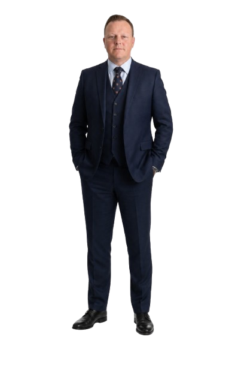

Community · Members · OperationsFlying club,
made simpler.
made simpler.
Lyneham Flying Club
Club website with tailored membership and operational functionality.
I'm Matt, a freelance web developer working with agencies and ambitious teams to deliver well-designed websites, custom applications and connected digital systems.

A mix of complex platforms, custom WordPress builds and digital products. Selected examples of the systems I design and develop.
Club website with tailored membership and operational functionality.
Custom golf society website and management system.
Professional services web experience with a headless CMS.
Connected software products and operational tooling.
Project visuals are illustrative design treatments, not screenshots or performance claims.
I work directly with agencies that need experienced hands for a specific delivery, a complicated brief, or reliable overflow development.
Start a conversation ↗WordPress themes, plugins, responsive frontends and CMS-led builds.
Laravel, PHP, headless solutions and specialist business workflows.
APIs, automation, data flows and operational integrations.
Project-based support, technical problem solving and collaborative handover.